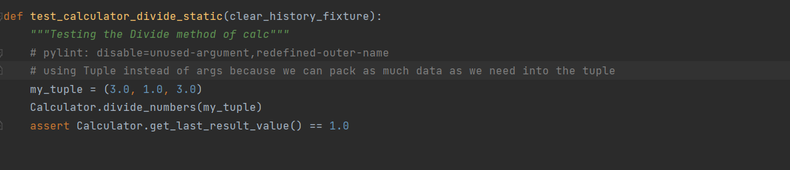

AAA Testing
Arrange-Act-Assert is a great way to structure test cases. It prescribes an order of operations:
-
Arrange inputs and targets. Arrange steps should set up the test case. Does the test require any
objects or special settings?
Does it need to prep a database? Does it need to log into a web app? Handle all of these operations
at the start of the test.
-
Act on the target behavior. Act steps should cover the main thing to be tested. This could be
calling a function or method,
calling a REST API, or interacting with a web page. Keep actions focused on the target behavior.
-
Assert expected outcomes. Act steps should elicit some sort of response. Assert steps verify the
goodness or badness of
that response. Sometimes, assertions are as simple as checking numeric or string values. Other
times, they may require checking multiple facets of a system. Assertions will ultimately determine
if the test passes or fails
Unit Testing
Here’s a basic unit test for Python’s absolute value function
This test may seem trivial, but we can use it to illustrate our pattern. I like to write comments
denoting each phase of the test case as well.
-
The Arrange step creates a variable named “negative” for testing.
-
The Act step calls the “abs” function using the “negative” variable and stores the returned value in
a
variable named “answer.”
-
The Assert step verifies that “answer” is a positive value.
Why AAA Important
Arrange-Act-Assert is powerful because it is simple. It forces tests to focus on independent, individual
behaviors. It separates setup actions from the main actions. It requires test to make verifications and
not merely run through motions. Notice how the pattern is not Arrange-Act-Assert-Act-Assert – subsequent
actions and assertions belong in separate tests! Arrange-Act-Assert is a great pattern to follow for
writing good functional tests.
AAA Testing in Calculator

-
The Arrange step creates a variable named “my_tuple” for testing.
-
The Act step calls the “divide_numbers” function using the “Calculator” class by passing the
variable my_tuple
-
The Assert step verifies that “answer” is a 1.0.